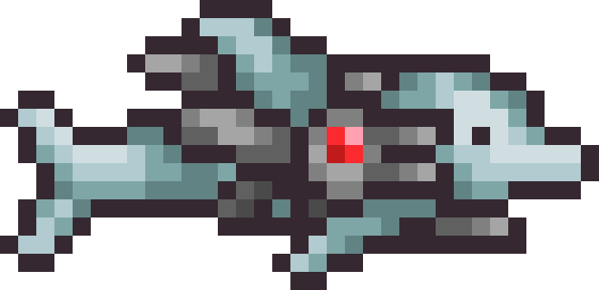
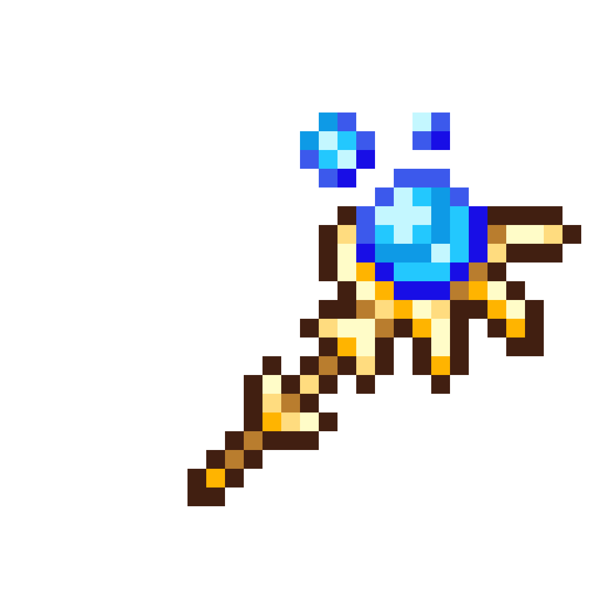

Melee

Melee players use swords, yo-yo's, and other close range weapons. This class is good for players who like fighting enemies up close.
Ranger

Rangers use bows, guns, and other ranged weapons. They can attack enemies from a distance and avoid getting too close.
Mage
Mages use magic weapons to deal damage to enemies. This class has powerful attacks but uses mana to cast spells.
Summoner

Summoners use minions and whips to fight enemies. Their minions can attack enemies while the player focuses on staying safe.